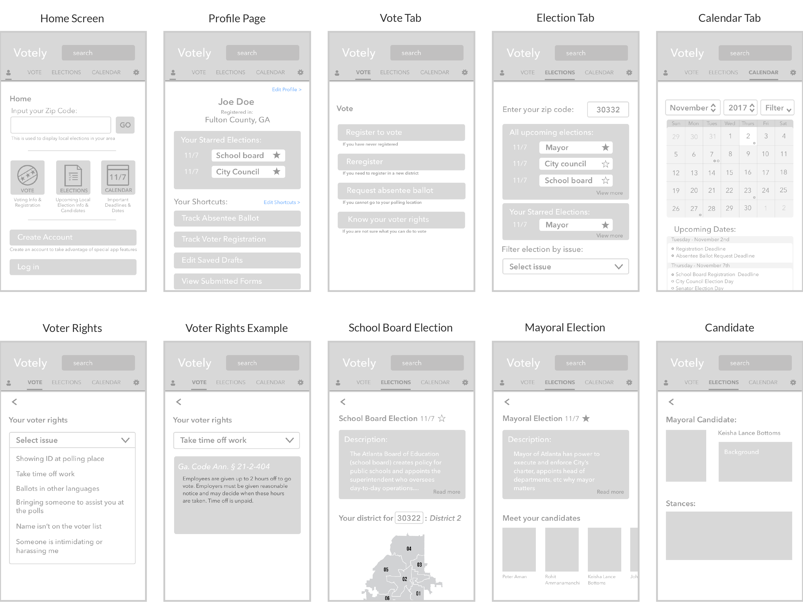

|
Votely 
Votely is an app designed to help citizens of Atlanta become more involved in upcoming local elections. Created in collaboration with Minju Kwon and Alice Zheng. The Problem There is low voter turnout for local elections. Initial Research User interviews with young adults revealed several key reasons why people did not vote:
Market research showed that for election info, people used the Georgia Secretary of State website, government office websites, and various non-profit and campaign sites. Goal Design an app to engage citizens with local elections, with key tasks such as voter needs & registration, viewing elections & candidate stances, and keeping track of deadlines & dates. 

From the sticky notes of scenarios above, we developed three personas based off of our user research, along with scenarios, storyboards, and sketches of prototypes for each persona. Wireframes The lo-fi prototypes below showcase the three main functionalities of Votely: voter tasks, election info, and calendar. I conducted user testing and heuristic evaluations with these to discover any confusion or frustrations.  User Testing User testing and heuristic evaluations revealed improvements for our prototype:
Final Designs The final prototype has three key sections that are demonstrated in the following screencasts:
Viewing voter rights  Election & candidate search |
is a designer with experience in UX/UI, front-end development, and graphic design. Her passions lie in emerging tech + design for social impact.
Currently a product designer at Arcadia Power.
Read more..